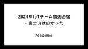

hacomono TECH BLOG
https://techblog.hacomono.jp/
フィットネスクラブやスクールなどの顧客管理・予約・決済を行う、業界特化型SaaS「hacomono」を提供する会社のテックブログです！
フィード

2024年IoTチーム開発合宿 - 富士山は白かった
hacomono TECH BLOG
この記事は hacomono advent calendar 2024 の11日目の記事です 1. ご挨拶 2. この記事のテーマ 2.1. 前回の反省 2.2. 合宿の概要 3. 合宿開催 3.1. day 0 3.2. day 1 運動スペースにて交流 成果発表 懇親会 二次会 3.3. day 2 現地視察 解散 4. 合宿を終えて ex. 1. ご挨拶 みなさん、こんにちは。 hacomonoのIoTチームのBackendDevグループに所属しているshiguです。 IoTチームはhacomonoの予約システムと連携したデバイスの開発や運用を行っています。 Web開発が中心の会社かと思…
1日前
K8sのControllerに入門してみた
hacomono TECH BLOG
この記事は hacomono Advent Calendar 2024 9日目の記事です。 こんにちは！基盤本部プラットフォームグループのかいかいです。 今回初めてアドベントカレンダーなるものに参加してみました。 どんな話題でも OK とハードルを低くしてもらっているので、今回は Kubernetes 周りを学習したことを話したいと思います。 組織での取り組みではなく、個人の取り組みになりますのでご了承ください！ 経緯 私はお家 k8s などを行っており、Kubernetes でできることや利用方法はなんとなくわかってきたのですが、Kubernetes の内部で起きていることまでは理解できてい…
3日前
(小ネタ) roadmap.sh で自分のスキルを可視化してみる
hacomono TECH BLOG
この記事は hacomono Advent Calendar 2024 の8日目の記事です どうも, みゅーとんです. 最近サボり過ぎて, 私の執筆記事が全体の 15% を下回っていました. (記事執筆時点) 今年は例年の半分しかかけず, なかなか熱量維持つって大変ですね. TL;DR roadmap.sh は特定の技術領域における学習のロードマップを示してくれる アカウント登録すれば, その習熟度合いを管理し共有できる Front-end Roadmap こんな図, 見たことないですかね？ ※ 記事の都合上, 途中で切ってしまってますが・・ Front-end Roadmap と呼ばれる図で…
4日前
エンゲージメントサーベイを導入した話 1
1
hacomono TECH BLOG
この記事は hacomono advent calendar 2024 の6日目の記事です はじめに こんにちは！ 株式会社hacomonoのエンジニアリングマネージャーをしているはまーです。 今年3月にhacomonoに入社して新たな環境でチャレンジを開始することになり、プライベートでは娘（5歳）と息子（2歳）を溺愛し、気がついたらあっという間に半年ちょっとが経過し年末を迎えておりました。正に、光陰矢の如し、時が経つのは本当に早いものです。。。 そんな私がhacomonoに入社してからプロダクト組織で新たにエンゲージメントサーベイを導入したのですが、「なぜエンゲージメントサーベイ？」とか「実…
6日前

hacomonoにおけるRelease Toggles 実践編
hacomono TECH BLOG
この記事は hacomono Advent Calendar 2024 3日目の記事です。 年の瀬も迫ってまいりましたアドベントカレンダー、読者の皆様におかれましてはいかがお過ごしでしょうか。 リーアキテクチャ&イネーブルメント部に所属しているさいもん（野崎）です。 年々、一年を短く感じるようになり、ついこの間年始だったのになと思うばかりであります。 現在は、既存コードの改善やリアーキテクチャタスクなどに取り組んでおり、テックブログにも以下のような記事を投稿しております。 「緊急で重要」なrenovate, dependabotの更新 リアーキテクチャ&イネーブルメント部を立ち上げました/リフ…
9日前
hacomonoでのfeature flag導入/検討
hacomono TECH BLOG
この記事は、hacomonoアドベントカレンダー2024の2日目の記事です。 はじめに こんにちは。プラットフォーム部所属のまこたすです。 本記事では、昨年プラットフォームチームで作成した基盤システムの1つであるfeature flagについてご紹介します。 記事は、前編 / 後編で分かれています。前編ではfeature flagについての理論と構築したシステム構築についてご紹介します。後半ではhacomonoアプリケーション側での利用 / 展開などの実践的な内容についてふれます。 本日 / 明日と連続でお送りしますので、どちらも最後までご覧いただけますと幸いです。 feature flagと…
10日前
hacomono API Ruby 3.3 / Rails 7.1 へのアップデート
hacomono TECH BLOG
この記事は hacomono advent calendar 2024 の1日目の記事です おはこんばんちは。hacomono CTO室/リアーキテクチャ&イネーブルメント部の iwazer です。 2024年アドベントカレンダーの開幕を担当して慌てております（11/28) 今年私が注目してたゲームは FF7 Rebirth くらいでしたが、パルワールドとゼルダの伝説・知恵のかりものが楽しめました。 今はコツコツとドラクエ3リメイクをやっております。オリジナルをやったのは35年前なので完全新作です。楽しいです。 はじめに まずはこれまでの hacomono API の Ruby / Rails…
11日前
Notionで下書きした記事をはてなブログに自動転写するシステムを開発した話
hacomono TECH BLOG
こんにちは！hacomonoの開発基盤グループでインターンとして活動しているゆーたです。 2024年7月にhacomonoにジョインしました。これまで約2年間、主にアプリケーション開発を担当するインターンやバイトをしていましたが、hacomonoでは開発基盤チームに所属していることもあり、インフラも含めて広く触れる機会をいただいています。 先日、初めてのタスクを完遂したので、今回はその内容を振り返りたいと思います。 TL;DR Notionで管理しているテックブログ記事を、はてなブログへ自動転写するアプリケーションを開発 記事の手動転写による30分〜1時間のリードタイムを、数分に短縮することに…
13日前
じゃんけんを題材にAWS Step Functionsのハンズオンを実施した話
hacomono TECH BLOG
はじめに こんにちは！ 基盤本部プラットフォームグループのかいかいです。 今回はhacomonoプロダクトチームの社内イベント「9月だョ！全員集合」での出し物で、私が担当したじゃんけんゲームについて紹介させていただきます。 ※注意点として、この記事はじゃんけんを AWS Step Functions で実装することを推奨するものではありませんので、ご承知おきください。 経緯 全員集合イベントでは、コミュニティブースか新機能コンテストのどちらかに参加することができ、我々プラットフォームグループでは、グループの活動を広めることを目的にコミュニティブースに出展することにしました。 楽しんでもらいなが…
15日前
Vue Fes Japan 2024 セッションレポート
hacomono TECH BLOG
こんにちは。 hacomono Engineering Office の りゅーほ @rh1011_ です。 hacomonoは、先月開催されたVue Fes Japan 2024にGoldスポンサーとして協賛をさせていただきました。 参加したエンジニアのセッションレポートを公開いたします。 [Keynote: Vue, Vite and the Future of JS Tooling] ▼yasu Vue.js 生みの親である Evan You 氏が立ち上げた void(0) によって、これからフロントエンドのツールチェーンを統一していくという話。 同社の Oxc プロジェクトによって開発…
21日前
運用保守部これからのTRY
hacomono TECH BLOG
運用保守部ってどんな役割なの？ 運用保守部のとっしーです、2023年9月に入社してはや1年が経ちました。 もともとは別会社で業務委託としてお客さまが運用するサービスを保守する役割だったのですが、いつか自分が所属する会社のサービスにかかわりたい、一緒に成長していきたいという思いからご縁があってhacomonoにジョインしました。 あっという間、そして無我夢中・必死なんてキーワードが頭をよぎります。 そんな1年でした。 hacomonoはSaaSの会社です、常に新しいことへの挑戦をし続ける必要があります。 そのために開発に携わるメンバーには本来向き合うべき機能追加・改善・改修に注力してほしい。 一…
22日前
デザインシステム構築に向けた委員会発足の話
hacomono TECH BLOG
はじめに はじめまして。hacomono UX部エンジニアリングマネージャのしまです。 hacomonoへは2024年2月に入社いたしました。 現在UX部では、デザイナーと一緒に、プロダクトのUI改善のための委員会を発足し、日々改善に取り組んでいます。 委員会発足に至るまでの背景や、現在どのように委員会活動を進めているかをご紹介したいと思います。 まずはその前に、UX部の紹介を簡単にしたいと思います。 UX部とは hacomonoのUX部には、私を含めて現在6名のエンジニアが所属しておりまして、下記のミッション・ビジョンを掲げ、日々プロダクト開発に取り組んでいます。 ミッション hacomon…
1ヶ月前
チームのタスク管理をjiraからNotionに移行しました
hacomono TECH BLOG
前段 こんにちは、hacomonoでエンジニアをしているたくろーです。 8月頃からfeatureグループに配属されスクラムを導入しました（完璧にできているとは言いませんが）。試行錯誤を重ねる中で、最近、長年使用していたJiraでのタスク管理をやめ、Notionでのタスク管理に移行したところ今のところ非常に使いやすいのでこの経験を簡単に記事にまとめたいと思います。 なお、スクラムを実践しているにもかかわらず、「タスク」や「サブタスク」という言葉を使用していますが、詳しい方々には適宜「これはプロダクトバックログだな」「これはスプリントバックログだな」と読み替えていただければ幸いです。 移行した背景…
1ヶ月前
わたしと肉とすごろくと
hacomono TECH BLOG
こんな人におすすめの記事です 社員数が増えて自分の部署のこと知ってる人が少なくなってきて動きづらいなあ…と思っている人 エッ！SaaS企業のhacomonoにハードウェアを扱う部署があるの！？と初めて知った人 ”すごろく”という文字が気になって、たまたまページを開いてしまった人 こんな人におすすめの記事です はじめに 今年も全員集合イベントが開催されるらしい ブース出展、何やろう 約1ヶ月で形にするために いざ当日、出陣！ わたしと肉とすごろくと おわりに はじめに 2024年9月30日、ようやく夏の暑さが薄れ、カーディガンが必要になる気候になってきた原宿。 そこにはすごろくに興じる大人たちの…
1ヶ月前
Kaigi on Rails 2024 にhacomonoがゴールドスポンサーとして協賛します！
hacomono TECH BLOG
こんにちは！株式会社hacomonoの Engineering Office でアシスタントをしているみーこです。 10月25日･26日に開催されるイベント、Kaigi on Rails 2024 についてのお知らせです。 Kaigi on Rails 2024 とは？ Kaigi on Railsのコアコンセプトは 「初学者から上級者までが楽しめるWeb系の技術カンファレンス」 です。 Kaigi on Railsは技術カンファレンスへの参加の敷居を下げることを意図して企画されています。 また、名前の通りRailsを話題の中心に据えるカンファレンスではありますが、広くWebに関すること全般（…
2ヶ月前
APIテストにPostmanを導入してみて役立った便利機能
hacomono TECH BLOG
こんにちは！hacomono QA部のえびちゃんこと蛯子（えびこ）です。 今回はAPIテストにPostmanを導入し、実際に使ってみて発見した便利な機能をいくつかご紹介できればと思います。 Postmanとは？ Postman は、API を構築および使用するためのAPI プラットフォームです。 APIテスト機能を有しており、リクエストやトークンを設定してAPIを送信することによりレスポンスの確認ができます。 GUIベースでとっつきやすく、初心者でも直感的に操作ができるように設計されているツールです。 テストスクリプト生成AI「Postbot」 APIテストを行う際、期待したレスポンスが返って…
2ヶ月前
hacomonoプロダクトチームの社内イベント「9月だョ！全員集合」を開催しました🎊
hacomono TECH BLOG
はじめに こんにちは！ 株式会社hacomonoの Engineering Office でアシスタントをしているみーこです。 hacomonoはフルリモート勤務の企業。 とはいえオフラインでの集まりも大切にしており、年間を通じて大小さまざまなイベントを開催しています。 そのなかで最も大きなイベントが、全社イベントのhacofes。 そしておそらく2番目に大きいであろうイベントが9月の終わりに開催されました。 そう、それがプロダクトチームの社内イベントである 「9月だョ！全員集合」！ 「全員集合」is 何？ いつもはフルリモートの私たちだからこそ、イベントのときはオンラインとのハイブリッド開催…
2ヶ月前
hacomonoにSRE文化を取り入れる為にSLOダッシュボードを創設した話
hacomono TECH BLOG
はじめに 初めまして。SRE部のiwachan(@Diwamoto_)です。 hacomonoには2024年の1月に入社しました。もう半年過ぎてて時間が早く感じます。 最近は5ヶ月になった娘を絶賛溺愛しています。 徒歩0分で娘の顔を見れる点はリモートワークの利点の一つですね。 また、Xで溢れている地面師ネタを理解したく、やっとNetflixに加入して「地面師たち」を全部見ました。ひとまず今年1番面白かったです。 TL;DR SLO文化を醸成するためにダッシュボードを展開したよ そのおかげで潜在的なバグを発見したよ かなり安くできたよ ここまで来るのにSLO本が本当に助けになったからみんなも読ん…
2ヶ月前
Designship 2024 にhacomonoがゴールドスポンサーとして協賛します！
hacomono TECH BLOG
こんにちは！株式会社hacomonoの Engineering Office でアシスタントをしているみーこです。 10月12日･13日に開催されるイベント、Designship 2024についてのお知らせです。 Designship 2024とは？ Designshipは最前線のデザインを学び、第一線のデザイナーと語り合う年に一度のデザインの祭典であり、日本最大級のデザインカンファレンスです。 今年のコンセプトは 「広がりすぎたデザインを、接続する。」 design-ship.jp イベント概要 日程 ▶ 2024年10月12日（土）、10月13日（日） 開催方法 ▶ オフライン・オンライン…
2ヶ月前
【イベントレポート】YAPC::Hakodate 2024 に協賛しました
hacomono TECH BLOG
こんにちは、hacomono QAの森島です。 hacomonoは10月5日(土)開催の YAPC::Hakodate にPlatinum Sponsorとして協賛&現地ブース出展しました。 この記事では現地会場やスポンサーブースの様子などをお届けいたします。 YAPC::Japan への協賛は YAPC::Hiroshima 2024 に引き続き2回目となります。 私自身は初めてのYAPCへの参加となりますが YAPCというと「Perlのイベント」というイメージがあり、本当に参加しても大丈夫だろうか？という一抹の不安がありましたが 実際に参加してみるとそんな不安なんか感じる暇がない程に全力で…
2ヶ月前
大企業と比較したhacomonoエンジニアの働き方
hacomono TECH BLOG
インテグレーションチームでエンジニアをしているひらゆーです。 2023年5月に入社してはや１年と少しが経ち、hacomonoエンジニアとしての働き方が徐々にわかってきたため、前職で僕が経験した大企業での働き方とそれぞれ比較をしてみようと思います。 前職 僕が前職で勤めていた会社はグループ全体で5万人以上、エンジニアチームも複数あり僕が所属していた部署のエンジニアだけでも70人ほどの規模でした。毎年新卒を数百人規模で採用しており人の入れ替わりも多かった印象です。 そんな企業の中で僕は人材系のポータルサイトの一部機能を開発しており、メインはバックエンドでたまにフロントエンドの開発も担当していました…
2ヶ月前
QAEが新規プロジェクトで、はじめにやったこと
hacomono TECH BLOG
こんにちは、hacomonoQA部のたっきー（滝田）とゆう（田中）です。 2024年8月より新規機能開発のプロジェクトが立ち上がり、QAE（QAエンジニア）として参画しました。 プロジェクト初期段階にQAEとして取り組んだ事柄を紹介します。 プロジェクト参画前に QA部として、アジャイルテストを取り入れていくという目標を立てていました。 このタイミングで新規プロジェクトに参画することになったため、従来のやり方に捉われず、テストおよび開発フローの改善にアプローチすることにしました。 開発フロー改善 開発フローの改善については要素が多いため、今回は「テスト」に焦点を当てます。 以前の開発フローはこ…
2ヶ月前
YAPC::Hakodate 2024 にhacomonoがプラチナスポンサーとして協賛します！
hacomono TECH BLOG
こんにちは！株式会社hacomonoの Engineering Office でアシスタントをしているみーこです。 10月5日に開催されるイベント、YAPC::Hakodate 2024についてのお知らせです。 YAPC::Hakodate 2024とは？ YAPCはYet Another Perl Conferenceの略で、Perlを軸としたITに関わる全ての人のためのカンファレンスです。 Perlだけにとどまらない技術者たちが、好きな技術の話をし交流するカンファレンスで、技術者であれば誰でも楽しめるお祭りです！ yapcjapan.org イベント概要 日程 ▶ 2024年10月5日（土…
2ヶ月前
ペアワークがすごいワークしてワクワークした話
hacomono TECH BLOG
はじめに 開発本部 フィーチャー部 会計・決済グループのかいです。 会計・決済と一括りにしていますが、主に担当しているのは決済領域です。 特にクレカ決済に関する機能開発が多く、日々奮闘しております。 さて、ふざけたタイトルから始まりましたが、本記事では決済領域の開発にペアワークを取り入れたことで良い感じに運用回ったよ！という体験についてご紹介いたします。 ペアワークって何？ 「ペアワーク」とは名前の通り、二人一組で作業を行うことを指します。 （3人以上になると「モブワーク」と呼ぶそうです。） エンジニアの方であれば「ペアプロ（ペアプログラミング）」という言葉を聞いたことがある方が多いと思います…
3ヶ月前
5 分くらいで考えた架空のフロントエンドフレームワークの言語サポートを vscode 拡張で作ってみた
hacomono TECH BLOG
お久しぶりです, みゅーとんです. だいぶ執筆しない期間がありましたが, 年明け 1 月に大量に書いていたので, その反動ということで許してください. 本テックブログのニッチな記事担当になりつつあるなぁという自覚がありまして. 今後, 基礎とか応用とかは他の人にネタを提供しつつ, 私はさらなる開発オタク向けコンテンツを提供する方針で書いていこうかなと思います. 概要 対象読者 vscode など, リッチめな IDE の利用経験がそれなりにある フロントエンド開発の経験がすでにある人 特に, Vue.js, svelte, astro 3 行でまとめ Vue.js, astro のような独自拡…
3ヶ月前
mabl メール検証をMailbox機能に置き換えた話
hacomono TECH BLOG
こんにちは！SETチームの塩濱です。 hacomonoではニックネーム文化なのではまちゃんと呼ばれております。 今回はhacomonoで活用しているE2Eの自動化ツール、mablでメールの確認導線を自作API→mablのオプションであるMailBox機能に置き換えた話を書いていきたいと思います。 MailBox機能自体が気になる方は、mablの記事も貼り付けておきますので気になる方はこちらもどうぞ。 help.mabl.com 置き換える前の状態 hacomonoにはメールを送信する機能が備わっており、正しい文章でメールが送られたかどうかの確認をする必要があります。 mablでのMailBox…
3ヶ月前
大手製造業からSaaS企業のエンジニアへ転職してみて
hacomono TECH BLOG
はじめに 初めまして！基盤本部/プラットフォームグループの kaikai こと有働開と申します！ ７月に入社してこの記事が出る頃には勤務 3 ヶ月目に突入しています。(早い・・・) 今回は入社エントリということで、入社前の思いと入社後 2 ヶ月間働いてみてどうだったのかなどについてお話しさせていただければと思います！！ 入社までの経緯 私は新卒で大手製造業に入社し、2 年目まで社内制度の研修でプログラミングや AI、ネットワークなどの IT 基礎を学ばせていただきました。 社会人になるまで IT はなんとなく怖いものだったのですが、前職のおかげで IT 技術や技術に対する考え方、プログラミング…
3ヶ月前
HAPPY🎉 1st Anniversary 運用保守部
hacomono TECH BLOG
運用保守部のマネージャのよこちゃん(@jikun)です。 早いもので運用保守専門部署を立ち上げて8/1で丸1年経過しました 運用保守部としての最初のテックブログの投稿からは10ヶ月です（こちら） 本当にあっという間でしたが、当時小6の息子が中1になったことによる変化を考えると長い年月だったのかもなとも思います。 そんな運用保守部の1年についてお伝えいたします！ 数字で見る運用保守部の成長 社員数 2人 → 9人 Capacity 社内外の問い合わせ回答率 43% → 70〜80% Capability 社内外の問い合わせ プロダクト改善チケットの対応 社員向け生産性向上を目的とした開発 お客様…
3ヶ月前
UXチームの開発にスクラムエッセンスを取り入れてみた
hacomono TECH BLOG
こんにちは。hacomono UX部エンジニアの do です。 私が所属するUXチームでは、今年の4月頃からスクラムエッセンスを開発に取り入れ始めたので、その背景やチームに起きた変化をご紹介したいと思います。 💡 スクラムエッセンス？ スクラムではなく、スクラムエッセンスと称しているのは、完全にスクラムのフレームワークに沿っていないためです。スクラムの3本柱（「透明性」「検査」「適応」）や価値基準を取り入れつつ、スラクムイベントをチームの状況に合わせて取捨選択する形で少しアレンジしています。スクラムについての詳細は スクラムガイド をご参照ください。 スクラムエッセンスを取り入れようと思った背…
3ヶ月前
QA部全員で取り組むカイゼンの仕組み
hacomono TECH BLOG
こんにちは、hacomono QA部SETチームの森島です。 QA部では隔週に1時間「Kaizen MTG」と称して課題や改善したいことを募り、議論を通して改善案を決めて実行する仕組みを運用しています。 今回はそのKaizen MTGをどうやって運用しているか、実際にどんな課題・事象を扱っているかを踏まえて紹介します。 現在QAメンバーが各プロダクトチームに専属でアサインされている体制になりましたが、Kaizen MTGの取り組みはQAメンバーが各チームにアサインされる体制になる前から取り組んでいました。 現在も変わらずQAという括りでこの改善活動が続いています。 Kaizen MTGの運用 …
4ヶ月前